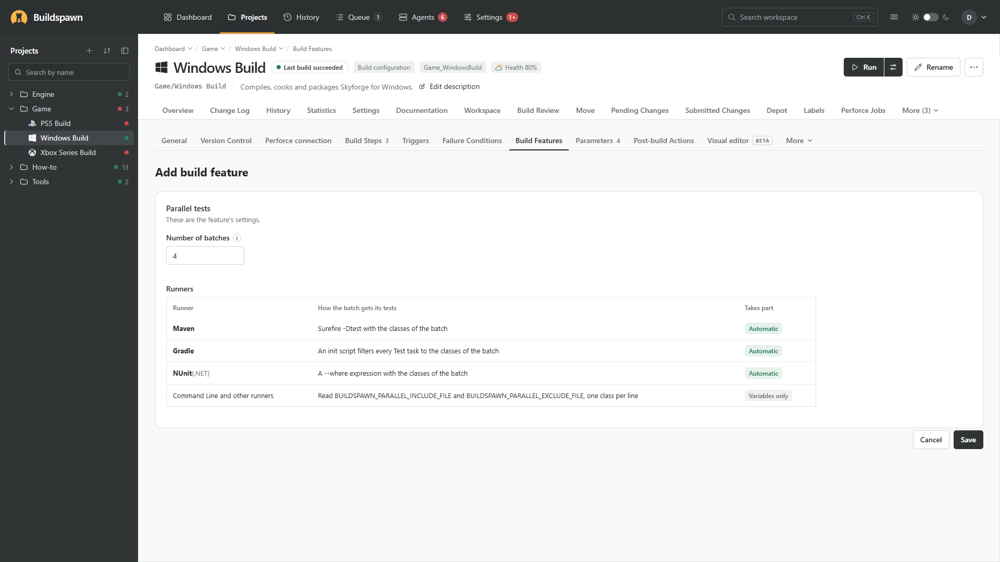

Parallel tests
Splits the tests of one build into batches that run at the same time, each on its own agent, and merges the results.
When to use it
Use it when your test step is slow and you have free agents. The test run of Unit Tests takes 40 minutes on one agent. With 4 batches it takes about 10, plus the checkout time. It works best when you have hundreds of test classes of about the same size.

How to set it up
- Open the build configuration, click Settings, then Build Features. Click Add build feature and choose Parallel tests.
- Type the Number of batches, from 2 to 20.
- Click Save.
- Make sure your test step can take its share (see the table of runners).
Every field
| Field | What it does | Default | Example |
|---|---|---|---|
| Number of batches | How many batch builds one build starts. Each batch runs all the build steps with its share of the test classes. Shares follow the durations of the last successful build. New tests are spread evenly. Between 2 and 20. | 4 | 4 |
| Runners | Says which steps take their share by themselves: Maven, Gradle and NUnit. Other steps read two environment variables: BUILDSPAWN_PARALLEL_INCLUDE_FILE (the classes of this batch) and BUILDSPAWN_PARALLEL_EXCLUDE_FILE (all the others). | - | - |
How a parallel build runs
- You start the build. It becomes the parent. It does not fetch sources and runs no steps. It holds no agent while it waits.
- The parent starts one batch build per batch. Each batch fetches the sources on its own agent, works out its share of the test classes and runs your steps.
- The parent waits, adds up the test counts and the durations, and ends with the worst result of the batches.
Notifications, such as email, run once on the parent with the merged result.
A worked example
Unit Tests has a Maven step. The studio sets Number of batches to 4. Maven gets -Dtest= with the classes of its batch. For a step that runs a game test runner, the script reads the include file:
$classes = Get-Content $env:BUILDSPAWN_PARALLEL_INCLUDE_FILE
.\RunTests.exe --classes ($classes -join ",")What you see when it runs
The parent build page has a Parallel tests block with one row per batch: its number, a link to the batch build, its agent, the duration and the result, and the merged test summary. A batch shows Batch 2 of 4 with a link to the parent.
Problems and fixes
| Problem | What to do |
|---|---|
| The number is refused | It must be a whole number from 2 to 20. |
| One batch takes much longer | Shares follow the last successful build. The first run is spread by name. It evens out after one good run. |
| A step runs every test in every batch | That step does not read the share. Use the include file, or give it the filter arguments of your test tool. |
| Batches wait in the queue | You need as many free agents as batches. Lower the number, or add agents. |